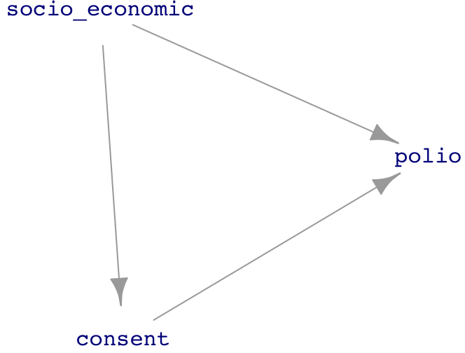
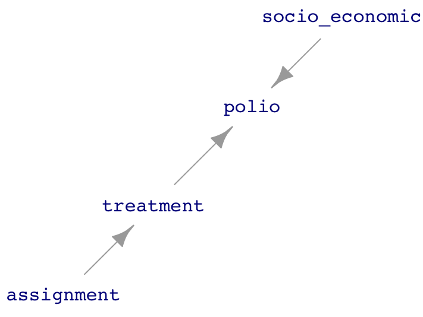
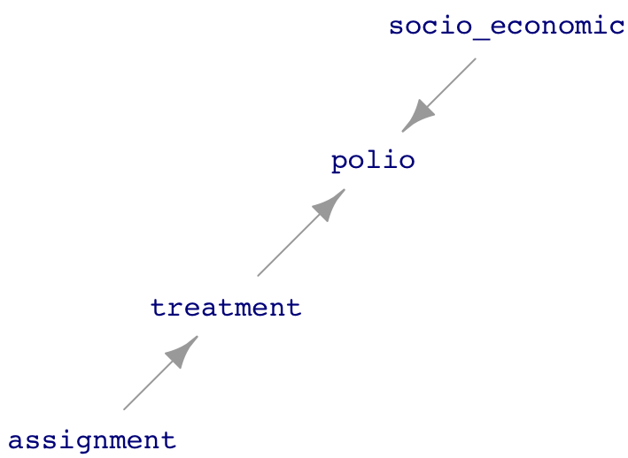

32 Experiment and random assignment
In its everyday meaning, the word “experiment” is similar in meaning to the word “experience.” As a verb, to experiment means to “try out new concepts or ways of doing things.” As a noun, an experiment is a “course of action tentatively adopted without being sure of the outcome: the farm is an ongoing experiment in sustainable living.” Both quotes are from the Oxford Languages, which provides examples of each: “the designers experimented with new ideas in lighting” or “the farm is an ongoing experiment in sustainable living.”
From movies and other experiences, people associate experiments with science. Indeed, one of the dictionary definitions of “experiment” is: “a scientific procedure undertaken to make a discovery, test a hypothesis, or demonstrate a known fact.”
Almost all the knowledge needed to perform a scientific experiment relates to the science itself: what reagents to use, how to measure the concentration of a neurotransmitter, how to administer a drug safely, and so on. This is why people who carry out scientific procedures are trained primarily in their area of science.
In many parts of the world, malaria is a major cause of disability and death. Economists who study ways to relieve poverty have a simple, plausible theory: reducing the effect of illnesses such as malaria will have an impact on poverty rates, since healthier people are more productive and reduced uncertainty can help them amass capital to invest to increase production further.
There are many possible ways to reduce the burden of malaria. Vaccination (although effective vaccines have been hard to develop), insect control using pesticides (which can cause environmental problems), etc. One simple intervention is the use of bed nets; screen nets deployed at night by draping over the bed and its occupant. Still, there are reasons why distributing bed nets may not be effective; people might use them incorrectly or for other purposes such as fishing. People might not be able to afford them, but giving them away might signal that they have no value.
To find out, try it: do an experiment. For instance, run a trial program where nets are given away to everyone in an area and observed whether and to what extent rates of malarial illness go down.
Such a trial is certainly an experiment. But it may not be the best way to get meaningful information.
Replication
To understand some of the contribution that statistical thinking can make to experiment, recall our earlier definition:
Statistic thinking is the explanation/description of variation in the context of what remains unexplained/undescribed.
A key concept that statistical thinking brings to experiment is the idea of variation. Simply put, a good experiment should involve some variation. The simplest way to create variation is to repeat each experimental trial multiple times. This is called “replication.”
Example: Replicated bed net trials
One way to improve the simple experiment bed net described above is to carry out many trials. One reason is that the results from any single trial might be shaped by accidental or particular circumstances: the weather in the trial area was less favorable to mosquito reproduction; another government agency decided to help out by spraying pesticides broadly, and so on. Setting up trials in different areas can help to balance out these influences.
Replicated trials also allow us to estimate the size of the variability caused by the accidental or particular factors. To illustrate, suppose a single trial is done and the rate of malarial illness goes down by 5 percentage points. What can we conclude? The result is promising but we can’t rule out that it is due to accidental factors other than bed nets. Why not? Because we have no idea how much unexplained variation is in play.
:::: {.column-margin}
?tbl-bed-net shows data from four imagined trials of the effect of bed nets. (Reduction by a negative number, like -1, is an increase.) The mean reduction is 3 percentage points, but this number is not much use unless we can put it in the context of sampling variation. Conducting multiple trials gives us a handle on the amount of sampling variation. By We can easilyNow we know something about the amount of variation due to site-to-site factors. The replication introduces observed variation in results, the observed variation can be quantified and used to place the overall trend in context.
Using the regression framework makes it easy to estimate the amount of sampling variation. The mean reduction corresponds to the coefficient from the model reduction ~ 1.
lm(reduction ~ 1,
data=Bed_net_data) %>%
coef()(Intercept)
3 lm(reduction ~ 1,
data=Bed_net_data) %>%
conf_interval()| term | .lwr | .upr |
|---|---|---|
| (Intercept) | 1 | 5 |
The observed 3 percentage point mean reduction in the incidence of malaria does stand out from the noise: the confidence interval does not include zero. In these (imagined) data, we have confidence that we have seen a signal.
Control
However, there is still a problem with the design of the imagined bed-net experiment. What if the year the experiment was done was unusually dry, reducing the mosquito population and, with it, the rate of malaria infection? Then we don’t know whether the observed 3 point reduction is due to the weather or the bed nets, or even something else, e.g. better nutrition due to a drop in international prices for rice.
We need to measure what the change in malarial infection would have been without the bed-net intervention. Care needs to be taken here. If the trial sites were rural, it would not be appropriate to look at malarial rates in urban areas where there was no bed-net program. We want to compare the trial sites with non-trial sites where the intervention was not carried out, so-called “control” sites. The With_controls data frame imagines what data might look like if in half the sites no bed-net program was involved.
| site | reduction | nets |
|---|---|---|
| A | 2 | control |
| B | 8 | treatment |
| C | 4 | treatment |
| D | 1 | treatment |
| E | -1 | control |
| F | -2 | control |
| G | 0 | control |
| H | 2 | treatment |
| I | 3 | treatment |
| J | 2 | control |
The proper regression model for the With_controls data is reduction ~ treatment:
lm(reduction ~ nets,
data=With_controls) %>%
coef() (Intercept) netstreatment
0.2 3.4 lm(reduction ~ nets,
data=With_controls) %>%
conf_interval() | term | .lwr | .upr |
|---|---|---|
| (Intercept) | -2.200 | 2.6 |
| netstreatment | 0.058 | 6.7 |
The effect of the bed nets is summarized by the netstreatment coefficient, which compares the reduction between the treatment and control groups. In this new (imagined) data frame, the confidence interval on netstreatment touches very close to zero; the signal is just barely discernible from the noise.
The reader might wonder why, in moving to the controlled design, the ten sites were not all treated with nets and another ten or so sites found to use as the control. Perhaps, even, the control sites could be selected as villages nearby to the bed net villages.
One reason is pragmatic: the larger study would require more effort and money. The larger study might be worthwhile; larger \(n\) would presumably narrow the confidence interval. Another reason, to be expanded on in the next section, is that the treatment and control sites should be as similar as possible. This can be surprising hard to achieve. Other factors such as the enthusiasm or skepticism of the town leaders toward public-health interventions might be behind the choice of the original sites for the bed-net program. The control sites might be towns that turned down the original offer of the bed-net program and, accordingly, have different attitudes toward public health.
Example: Testing the Salk polio vaccine
Today, most children are vaccinated against polio, though a smaller fraction than in previous years. This might be because symptomatic polio is very rare, lessening the perceived urgency of protecting against it. Partly, the reduction reflects the growth in the “anti-vax” movement, which became especially notable with the advent of COVID-19.
The first US polio epidemic occurred in 1916, just two years before the COVID-like “Spanish flu” pandemic.1 Up through the early 1950s, polio injured or killed hundreds of thousands of people, particularly children. Anxiety about the disease was similar to that seen in the first year of the COVID-19 pandemic.
There were many attempts to develop a vaccine against polio. Jonas Salk created the first really promising vaccine, the promise being based on laboratory tests. To establish the safety and effectiveness of the Salk vaccine, it needed to be tried in the field, with people. Two organizations, the US Public Health Service and the National Foundation for Infantile Paralysis got together to organize a clinical field trial which, all told, involved two-million students in grades 1 through 3.
The two studies involved both a treatment and a control group. In some school districts, students in grades 1 and 3 were held as controls. The treatment group was students in grade 2 whose parents gave consent. We will call this “Study 1.” In other school districts, the study design was different: the parents of all students in all three grades were asked for consent. The students with parental consent were then randomly split into two groups: a treatment and a control. Call this “Study 2.”
The Study 2 design might seem inefficient; it reduced the number of children receiving the vaccine because half of the children with parental consent were left unvaccinated. On the other hand, it might be that children from families who consent to be given a vaccine are different in a systematic way from children whose families refuse, just as today’s anti-vax families might be different from “pro-vax” families.
As reported in Freedman (1998)2, the different risk of symptomatic polio between children from consent versus refuse families became evident in the study. Table 32.2 shows the study results from the school districts which used half the consent group as controls.
The difference between treatment and control groups is very evident: a reduction from 71 cases per 100,000 children to 28 cases per 100,000. The no-consent children had a rate between the two, 46 per 100,000. Since both the “control” and “no consent” groups did not get the vaccine, one might expect those rates to be similar. That they are not shows that the “no-consent” children are systematically different from those children whose parents gave consent.
In the other branch of the study, Study 1, where no-consent 2nd-graders were used as control and vaccine was given to all whose parents did consent, the results (Table 32.3) were different because of confounding between treatment and consent.
| vaccine | size | rate |
|---|---|---|
| Treatment | 200000 | 28 |
| Control | 200000 | 71 |
| No consent | 350000 | 46 |
| vaccine | size | rate |
|---|---|---|
| Treatment | 225000 | 25 |
| No consent | 125000 | 44 |
The effect of the vaccine from Study 1 under-estimated the biological link between vaccination and reduction of polio risk.
Random assignment
The example of the Salk vaccine trial is a chastening reminder that care must be taken when assigning treatment or control to the units in an experiment. Without such care, confounding enters into the picture. Merely the possibility of confounding is damaging to the experiment’s result; it invites skepticism and doubt.

It is illuminating to look at the vaccine trial as a DAG. The essential situation is diagrammed in Figure 32.1. The socio_economic node represents the idea that socio-economic status has an influence on susceptibility to symptomatic polio3 and also is a factor in shaping a family’s decision about giving consent.
The DAG in Figure 32.1 has two pathways between treatment and polio that can produce confounding:
- \(\mathtt{treatment} \leftarrow \mathtt{consent} \rightarrow \mathtt{polio}\)
- \(\mathtt{treatment} \leftarrow \mathtt{consent} \leftarrow \mathtt{socio.economic} \rightarrow \mathtt{polio}\)

consent \(\equiv\) vaccine.The approach emphasized in Lesson 30 to avoid such confounding is to block the relevant pathways. Both can be blocked by including consent as a covariate. However, in Study 1, assignment to vaccine was purely a matter of consent; consent and treatment are essentially the same variable. Figure 32.2 shows the corresponding DAG, where consent and treatment are merged into a single variable. Holding consent constant deprives the system of the explanatory variable and still introduces confounding through socio_economic.
In Study 2, all the children participating had parents give consent. This means that consent is not actually a variable; it doesn’t vary! The corresponding DAG, without consent as a factor, is drawn in Figure 32.3. This Study 2 DAG is unfolded; there are no confounding pathways! Thus the model polio ~ treatment is appropriate.

The assignment to treatment or control in Figure 32.3 is made by the people running the study. Although the DAG doesn’t show any inputs to assignment, the involvement of people in making the assignment opens up a possibility that their assignment of treatment or control might have been influenced by other factors, such as socio-economic status. To guard against this, or even skepticism raised by the possibility, experimentalists have developed a simple safeguard: “random assignment.” In random assignment, assignment is made by a computer generating random numbers. Nobody believes that the computer algorithm is influenced by socio-economic status or any other factor that might be connected to polio in any way.
Blocking
“Spanish” is in quotes because Spain was not the source of the pandemic.↩︎
D. Freedman, R Pisani, R Purves, Statistics 3/e, p.6↩︎
In contrast to the usual expectation that lower socio-economic status is associated higher risk of disease, with polio the opposite holds true. The explanation usually given is that children who are exposed to the polio virus as infants do not become sick but do gain immunity to later infection. People later in childhood and in adulthood are at risk of a severe, symptomatic response to exposure. Polio is transmitted mainly via a fecal-oral route. Conditions favoring this route are more common among those of low socio-economic status. Consequently, infants of well-to-do families are less exposed to the virus and do not develop immunity. When they are eventually exposed to polio as children or adults, the well-to-do are at greater risk of developing disease.↩︎